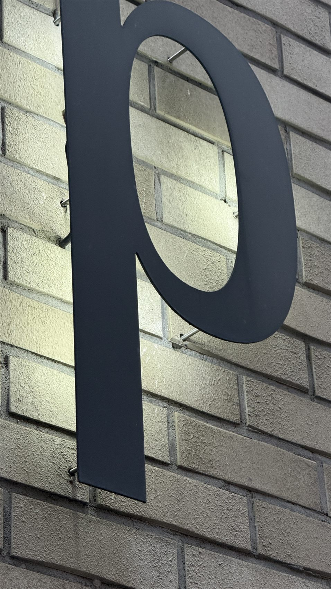

BASIC
Rozwiązanie ekonomiczne; litery z Dibond 3 mm, osobne dystanse, zwykle 2–4 punkty mocowania na literę.
Ekonomiczne litery Backlit LED- Technologia
- Litery 3D z frontem wykonanym z płyty kompozytowej Dibond 3 mm, z podświetleniem LED umieszczonym od tyłu.
- Montaż
- Każda litera jest mocowana osobno na transparentnych dystansach. Odsunięcie napisu od ściany umożliwia rozpraszanie światła i uzyskanie efektu HALO.
- Punkty montażowe
- W typowych realizacjach przewidujemy około 2–4 punktów mocowania na literę; ich ostateczna liczba i rozmieszczenie zależą od wymiarów, ciężaru i podłoża.
- Dla kogo
- Dla klientów szukających estetycznego, podświetlanego napisu w korzystnym budżecie, akceptujących indywidualny montaż każdej litery.